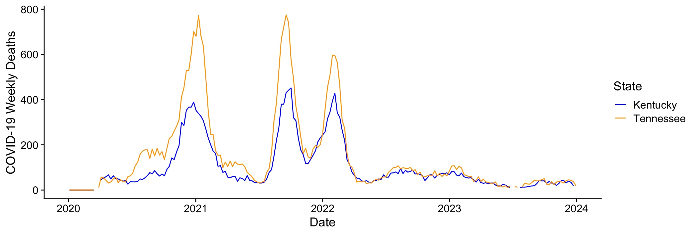

| Instructor | Dr. Jeremy Van Cleve |
| jvancleve@uky.edu | |
| Phone | (859) 218-3020 |
| Office | 216 THM |
| Office hours | By appointment via e-mail |
| Credits | 3 |
| Class Time | Tue/Thur 12:30pm-1:45pm |
| Class Location | JSB 357 |
| Website | https://github.com/vancleve/BIO580-DWVR (github website) |
| https://uk.instructure.com/courses/2077222 (Canvas website) |
The last 20 years have seen data science emerge as a field from data intensive work in other fields such as statistics, biology, physics, engineering, history, and journalism. This three-credit course aims to provide a brief introduction to data science and analyzing and visualizing data. As data science using R, Python, Julia, and other scripting languages has become more popular, so have the tools required to document, maintain, share, and replicate analyses and visualization. These activities constitute “literate programming” and “reproducible research”, and we will use some of these tools in order to produce replicable and publishable reports.
Quarto
markdown documents that use R to explain and reproduce
analysesdplyr, tidyr, and other tidyverse
packagesggplot2 packageEach week will consist of a introduction and interactive demonstration of the concepts and tools for that week on Tuesday followed by a lab where students apply the concepts and tools on Thursday. There may be preliminary readings to do before class for some weeks (see “Topic schedule” below and check back for updates); please make sure to do those so that we make the most of time in class.
Please bring a laptop to class with a recent version of macOS/Windows/Linux. If you need to borrow a laptop, please contact the instructor who can help you obtain one for the semester.
| Attendance | 20% | Two unexcused absences permitted without penalty |
| Lab work | 40% | Submitted as markdown file (.qmd) before the beginning
of the following week |
| One unexcused missing lab permitted without penalty | ||
| Data visualization project | 40% | Data analysis and figures using a dataset of your choice |
| 8-10 min presentation of data and figures | ||
| Markdown document with data analysis and figures due on date of presentation |
The assessment portion of the course has three components.
Class attendance.
Completion of the lab problems that we begin in
class. This must be turned in as a markdown document before
class the following week. If there are datasets that are
required for the analysis (other than datasets provided as part of
the lab or lecture), these should be provided along with the
Quarto markdown file (with last name qmd) by
adding all the files to a single compressed zip file. The
qmd or zip file should then be uploaded to the
Canvas course
website.
Data visualization project and presentation. The
last two weeks will be devoted to 8-10 minute presentations of
five figures that present data from a datasets of your
choice. The figures should be “publication quality” in terms of
aesthetics (labeling, font size, colors, etc) but do not need a caption
(that’s what the talk is for!). The markdown source code and any
necessary data files must be submitted to the Canvas website as a
zip file; compiling the markdown file (with
Quarto) should produce the figures as they were presented
during the lightning talk. If you want a challenge, you can even write
your slides in markdown too!
There is a ton of data out there so selecting a dataset can be challenging. There a few sites with lots of interesting data that may help get you started.
Selection of the dataset can be challenging so please do not hesitate to consult with the instructor for help.
| Undergraduate | Graduate | Range | ||
|---|---|---|---|---|
| A | A | 100% | to | 90% |
| B | B | < 90% | to | 80% |
| C | C | < 80% | to | 70% |
| D | E | < 70% | to | 60% |
| E | E | < 60% | to | 0% |
Midterm grades will be reported to all students by the date specified in Senate Rule 6.1.4.1.
Graduate students have an additional requirement for the data visualization project. The markdown document containing the data analysis and figures should be written as a short project report with the following sections:
The presentation will constitute 25% of the course grade and the written document 15% of the course grade for a total of 40% of the course grade for the data visualization project.
.qmd file and all the other necessary files
(data files, images, etc) in that folder..qmd files). That is, avoid putting in
full directories like /home/jva38/class/week1/stuff.jpg and
instead simply put stuff.jpg if its in the same directory
as the .qmd file..qmd can be compiled into a .html file
successfully by first typing rm(list=ls()) into the R
console and then compiling the file. This clear your workspace of
previous variables and is also a good way of preventing the problem
where an analysis worked when you closed R but now doesn’t when you
reopen it.There are some recent books on data science and visualization (all
written in RMarkdown, which is a predecessor and
alternative to Quarto) that cover much of the material in
the course.
If you want to become an R wizard in the style of Hadley Wickham, this book is for you.
The following are some popular books on R. PDFs are available for “check out” on the Canvas website under “Modules: References”.
ggplot2, R Markdown, and other R
packages.Quarto documentation. https://quarto.org/docs/guide/The following is the preliminary schedule of topics and will be adjusted as the semester progress.
| Week | Class Dates | Topic | Link |
|---|---|---|---|
| 1 | 01/09 & 01/11 | Intro to the course and markdown, and Quarto | html |
| 2 | 01/16 & 01/18 | Intro to R: data types, flow control, and functions | html |
| 3 | 01/23 & 01/25 | Vectors, slicing, and map(ping) | html |
| 4 | 01/30 & 02/01 | Getting data into R data.frames via files and spreadsheets | html |
| 5 | 02/06 & 02/08 | Tidy Data | html |
| 6 | 02/13 & 02/15 | Joins and databases | html |
| 7 | 02/20 & 02/22 | Text manipulation and regular expressions | |
| 8 | 02/27 & 02/29 | Introduction to plotting and ggplot2 | |
| 9 | 03/05 & 03/07 | Plot types in ggplot2 | |
| 03/12 & 03/14 | Spring Break | ||
| 10 | 03/19 & 03/21 | Principles of displaying data & how to modify plots | |
| 11 | 03/26 & 03/28 | Colors and heat maps | |
| 12 | 04/02 & 04/04 | Networks | |
| 13 | 04/09 & 04/11 | Visualizing/analyzing lots of data | |
| 14 | 04/16 | Interactive plots | |
| 04/18 | Project presentations | ||
| 15 | 04/23 | Project presentations |
Please see https://www.uky.edu/universitysenate/acadpolicy for a full description of UK academic policies regarding excused absences, religious observances, accommodations due to disability, and non-discrimination and Title IX compliance.
Unexcused absences will result in a decrease in the attendance grade and cannot be made up. Unexcused late work may be submitted but will be subject to a 20% penalty.
Members of the course are entitled to learn from each other in an open and welcoming environment regardless of their racial, ethnic, gender, and sexual identities. Conduct that is not respectful of these identities or of the national origin, religion, and political beliefs students and instructors will not be tolerated. Please report any concerning conduct to the instructor.
The University of Kentucky Senate Council Statement on Diversity, Equity, and Inclusion includes important additional language and information that applies to this course. Please refer to to this link for the full statement.
Transmission of COVID-19 is still prevalent in Kentucky. The instructor and students are entitled to practices that reduce transmission including, and not limited to, wearing a high-quality mask and social distancing.
In accordance with University guidelines, these transmission reducing practices are optional but the instructor encourages them. If COVID-19 is a specific risk to a student or a student has any concerns about classroom COVID-19 policies, please contact the instructor as soon as possible.
More information about COVID-19 and UK can be found here: https://www.uky.edu/covid-19/
Please see https://www.uky.edu/universitysenate/student-resources for a list of university resources including bias reporting, counseling, disability resources, libraries, and technology support.
Per university policy, students shall not plagiarize, cheat, or falsify or misuse academic records. Students are expected to adhere to University policy on cheating and plagiarism in all courses.
Please see the university policies on academic offenses, https://www.uky.edu/universitysenate/ao, for official descriptions of cheating and plagarism and the processes and penalties for violations of the policies.